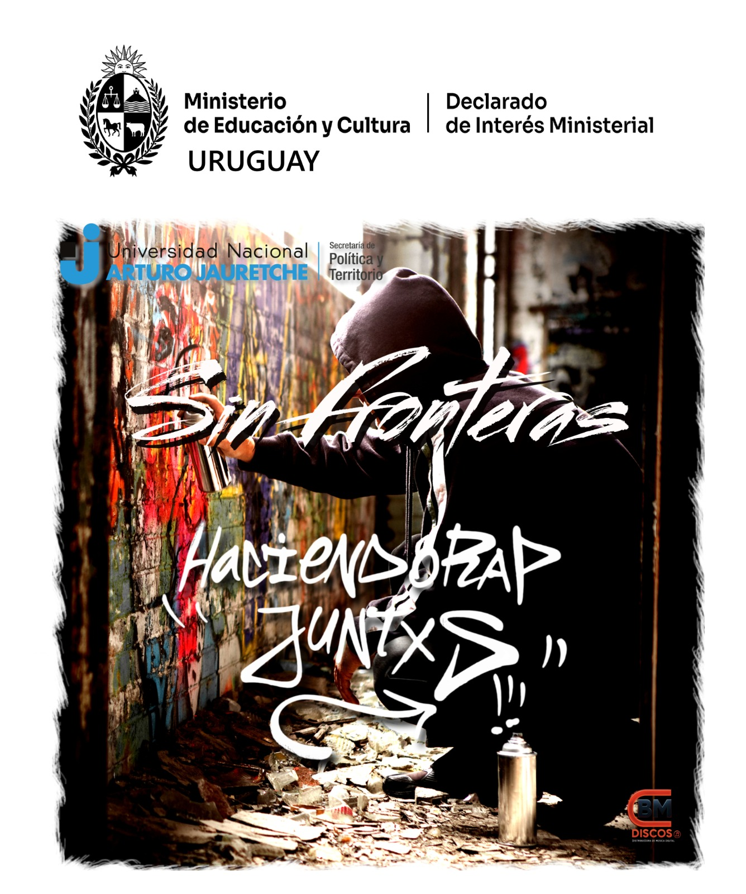
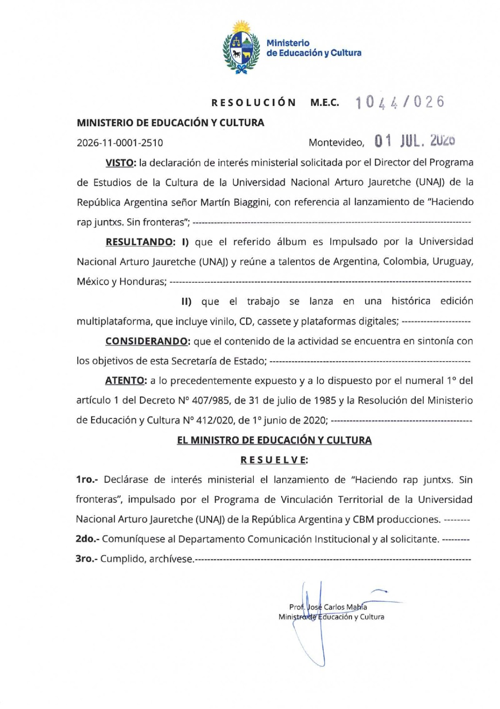

JULIO 2026
Declarados de Interés Ministerial en Uruguay
El proyecto Haciendo Rap Juntxs ha sido oficialmente declarado de interés ministerial en la República Oriental del Uruguay. Este reconocimiento internacional subraya la importancia de nuestro archivo territorial y valida el inmenso impacto que tiene la articulación comunitaria a través de la cultura hip hop, borrando fronteras y uniendo a la región.

